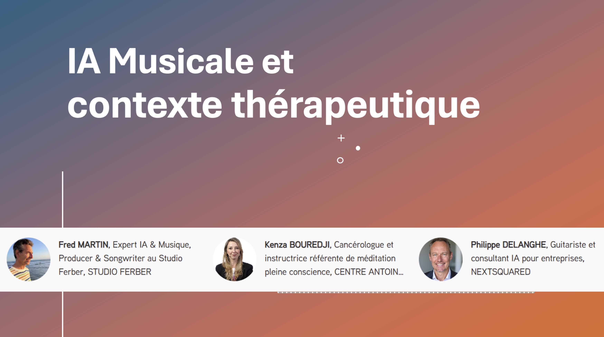
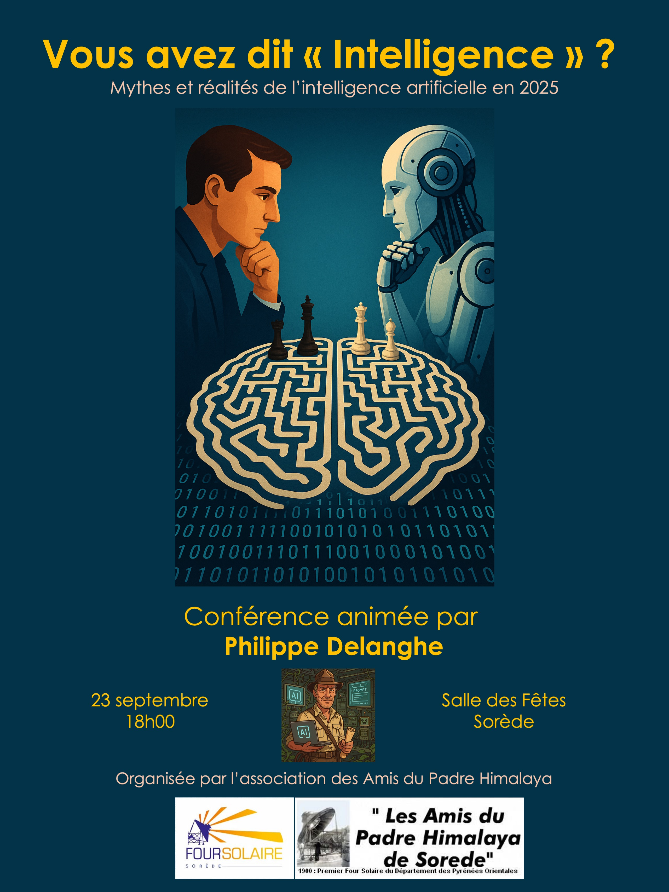

Exemples de prestations réalisées
Entreprises & Organisations
Workshop IA & RH
Applications concrètes de l'IA dans les ressources humaines. Cas d'usage, outils, bonnes pratiques.
Voir la présentationIA Strategy Conversation
Séminaire entreprise sur la stratégie IA. De la vision à l'exécution.
Voir la présentationFrom Zero to Hero
Session de formation intensive. Maîtriser l'IA générative en 45 minutes.
Voir la présentation

IA Musicale & Contexte Thérapeutique
L'IA au service de la création musicale en contexte thérapeutique. Europia, Cannes - Février 2025.
À venir Voir l'afficheIA & Production Musicale
Comment l'IA transforme la production musicale moderne. Studio Ferber - Avril 2025.
Télécharger le compte renduGrand Public
Histoire de l'IA
De l'âge de pierre à ChatGPT - une perspective historique pour comprendre où nous allons.
Voir la présentation
Conférence Laroque
IA pour tous - démystifier la technologie, comprendre les enjeux. Accessible et sans jargon.
Voir la présentation Voir l'affiche

Conférence Sorède
Intervention récente (septembre 2024) - synthèse de l'état de l'art IA.
Voir la présentation Voir l'afficheDernières interventions
Novembre 2024 - Colegio Multiplo (école bilingue), Campinas, Brésil
Décembre 2025 - Nuit de l'IA (théâtre de l'IA, Paris)
Début 2025 - Formations club informatique, Laroque des Albères
Février 2025 - IA Musicale et contexte thérapeutique (Europia, Cannes)
Avril 2025 - IA et production musicale (Studio Ferber)
Juin 2025 - Conférence organisée par le club informatique, Laroque des Albères
Septembre 2025 - Conférence organisée par les amis du four solaire, Sorède
Prochaines interventions
Novembre 2025 - Comité Olympique des Pyrénées-Orientales
Octobre 2025 - Chroniqueur IA pour l'émission WebTV Figaro "The Future of Learning"
Février 2026 - Ville de Llupia